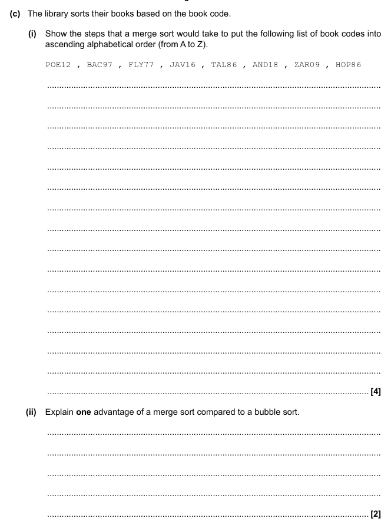

Algorithms
By Jeetaditya Chatterjee
Sorting and searching
Press s for speaker notes
Searching algorithms
Linear Search
Binary Search
def binary_search(list, item): # low and high keep track of which part of the list you'll search in. low = 0 high = len(list) - 1 # While you haven't narrowed it down to one element ... while low <= high: # ... check the middle element mid = (low + high) // 2 guess = list[mid] # Found the item. if guess == item: return mid # The guess was too high. if guess > item: high = mid - 1 # The guess was too low. else: low = mid + 1 # Item doesn't exist return None return binary_search([1, 2, 3, 4, 5], 4) # returns the positon
3
Sorting algorithm
Bubble sort
- [(5, 2), 7, 4, 3]
- [2, (5, 7), 4, 3]
- [2, 5, (7, 4), 3]
- [2, 5, 4, (7, 3)]
- start again as there were swaps
Merge sort

insertion sort
- [5, 2, 7, 4, 3]
- [5] [2, 7, 4, 3]
- [2, 5] [7, 4, 3]
- so on…
Questions
merge sort is an example of a divde and conquer algorithm, what happens in the divide stage?
explain the steps of a bubble sort
When you have a sorted list, which algorim is faster, Linear or Binary search?
exam question.
